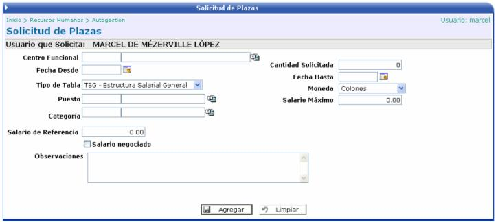

En esta opción se puede solicitar la apertura de plazas en la empresa. Para esto es necesario que el usuario ingrese cierta información al sistema, como la que se detalla a continuación:

Centro Funcional: es el centro funcional donde se creará la plaza.
Fecha Desde - Fecha Hasta: rango de fechas en que va a regir la plaza.
Cantidad Solicitada: cantidad de plazas a solicitar.
Tipo de Tabla: seleccionar el tipo de estructura salarial.
Puesto: seleccionar el puesto de la plaza.
Categoría: seleccionar la categoría del puesto.
Salario de Referencia: monto del salario que se pagará en la plaza.
Moneda: moneda en la que se realizará el pago.
Salario Máximo: monto máximo de salario a pagar en la plaza.
Salario Negociado: si se activa este campo, quiere decir que se agregaran componentes salariales al salario de la plaza.
Observaciones: campo para anotar cualquier comentario acerca de la plaza.
Una vez agregada toda la información se procese a aplicar la solicitud, la cual crea un registro en el módulo de Planilla Presupuestaria en la opción de Solicitudes de Plaza, donde se le podrá dar seguimiento a la misma.